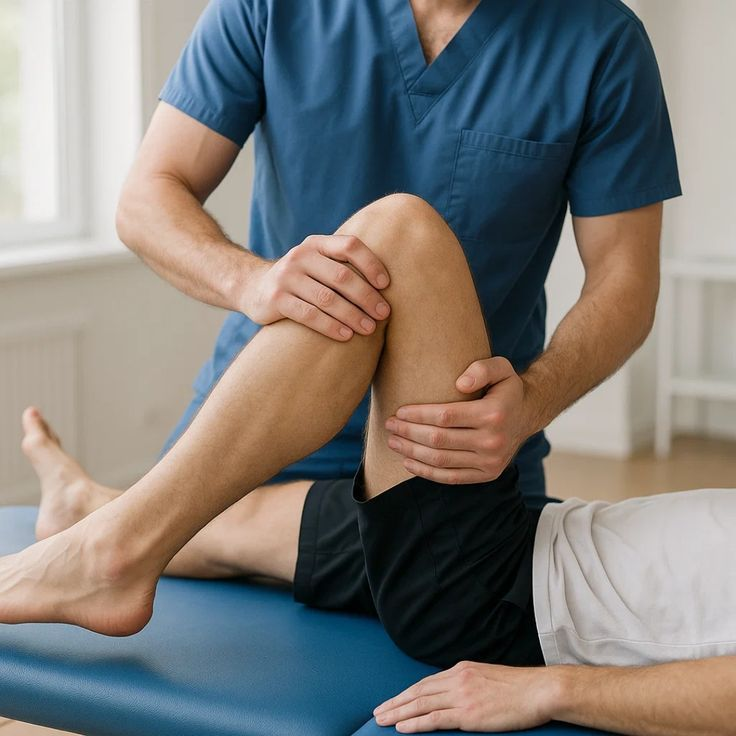

01
Assessment
Your physiotherapist reviews your symptoms, movement, strength and functional requirements to understand your rehabilitation needs.
Personalised physiotherapy and rehabilitation designed to support recovery, restore movement and help you safely return to your activities.

Sports Injury Management focuses on helping individuals recover from activity-related injuries through assessment, rehabilitation and progressive exercise.
Your physiotherapist can develop an individualised programme based on your injury, current movement and functional goals.
Your injury and movement are assessed before creating an appropriate rehabilitation plan.
Exercises can be progressed according to your recovery, strength and functional goals.
Rehabilitation may focus on helping you gradually return to your preferred activities.
Sports Injury Management is a structured rehabilitation approach that may help people recover from sports and activity-related injuries and progressively regain function.
Your physiotherapist reviews your symptoms, movement, strength and functional requirements to understand your rehabilitation needs.
A progressive programme may include mobility work, strengthening, balance and sport-specific exercises.
Recovery goals can include gradually rebuilding physical capacity and confidence for everyday or sporting activities.
Physiotherapy rehabilitation may be considered for a range of activity-related conditions, depending on individual assessment.
Rehabilitation may focus on restoring movement, strength and gradual tolerance to activity.
Structured rehabilitation can support strength, stability and functional recovery where clinically appropriate.
Treatment may include mobility, strength, balance and progressive functional exercises.
Rehabilitation can be tailored to support knee strength, movement and functional tasks.
Exercise-based rehabilitation may help address movement and strength requirements.
Your programme may focus on activity modification, strengthening and gradual return to loading.
Every injury is different. Your physiotherapist can adapt the rehabilitation programme according to your condition, activity level and recovery goals.
Rehabilitation may help you gradually improve mobility and functional movement.
Progressive exercises may be used to rebuild strength and physical capacity.
Balance and control exercises may support stability and functional performance.
A gradual programme may help you work towards returning to your desired activity.
Discuss your injury, symptoms, activity level and rehabilitation goals.
Your physiotherapist creates a programme based on your individual presentation.
Exercises are gradually progressed as your movement and physical capacity improve.
Your rehabilitation can progress towards functional and activity-specific goals.
These are general questions about sports injury rehabilitation. Your physiotherapist can provide advice based on your assessment.
Ask Our Team →The appropriate time depends on the injury and its severity. If symptoms are significant or you are concerned, professional assessment can help determine the appropriate next step.
Rehabilitation may support a gradual return to activity by addressing movement, strength, balance and functional requirements.
They may. Rehabilitation programmes are often adjusted according to your progress, symptoms, strength and functional goals.
A well-designed rehabilitation programme may address strength, movement and functional factors that are relevant to your individual condition.
An assessment is recommended so that your physiotherapist can determine an appropriate rehabilitation approach for your needs.
Speak with our physiotherapy team about your sports injury and understand the rehabilitation options that may be appropriate for you.